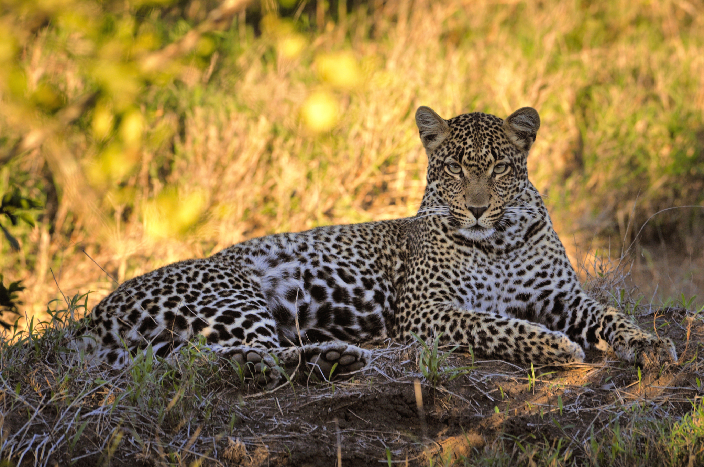

Η λεοπάρδαλη ή απλά πάνθηρας είναι σαρκοφάγο θηλαστικό ζώο που ανήκει στις αιλουρίδες. Είχε κυνηγηθεί πολύ από τον άνθρωπο για την όμορφή της γούνα, αλλά πλέον προστατεύεται με ειδικούς νόμους. Ζει στην Αφρική και στην Νότια Ασία, ενώ παλαιότερα ζούσε και στην Ευρώπη (ίσως υπάρχει ακόμα στην περιοχή του Καυκάσου), ακόμα και στην Ελλάδα, μέχρι και την Ισπανία.
Η λεοπάρδαλη έχει μήκος σώματος κοντά στα 2,1 μέτρα, με την ουρά να καταλαμβάνει τα 90 εκ. Τα αρσενικά ζυγίζουν από 37 εως 90 kg με ύψος 60 εως 70 cm, ενώ τα θηλυκά είναι ελαφρύτερα, ζυγίζοντας από 28 εως 60 kg με ύψος 57 εως 64 cm. Παρότι θεωρείται το μικρότερο από τα τέσσερα μεγάλα αιλουροειδή του γένους panthera (Λιοντάρι, Τίγρης, Ιαγουάρος, Λεοπάρδαλη), είναι το δυνατότερο αναλογικά με το μέγεθος και το βάρος του (εάν δηλαδή είχαν όλα τα παραπάνω υποείδη το ίδιο σωματικό βάρος και μέγεθος, η λεοπάρδαλη θα υπερτερουσε σε σωματική (μυϊκή) δύναμη).
Συνήθως, οι λεοπαρδάλεις είναι μεγαλύτερες σε περιοχές όπου βρίσκονται στην κορυφή της τροφικής αλυσίδας, χωρίς περιορισμό του ανταγωνισμού από μεγαλύτερους θηρευτές όπως το λιοντάρι και η τίγρη. Ορισμένες λεοπαρδάλεις στη Βόρεια Αφρική υποτίθεται ότι ήταν τόσο μεγάλες όσο τα Βερβερικά λιοντάρια. Το 1913, μια εφημερίδα της Αλγερίας ανέφερε ότι μια σκοτωμένη λεοπάρδαλη φαίνεται να υπολογίστηκε περίπου στα 275 εκατοστά συνολικού μήκους. Προς σύγκριση, τα μεγέθη των αρσενικών λιονταριών κυμαίνονται απο 266 εως 311 cm από το κεφάλι μέχρι το τέλος της ουράς.
Η ταχύτητα του εν λόγω αιλουροειδους φτάνει μέχρι και τα 58 χλμ. την ώρα, ενώ έχει επιπλέον την ικανότητα να πραγματοποιεί άλματα μήκους έως και 6 μέτρων. Ο συνδυασμός δύναμης, ταχύτητας αλλά κυρίως η εξαιρετική ικανότητα του συγκεκριμένου είδους να κινείται εντελώς αθόρυβα χωρίς να γίνεται αντιληπτό από τα πιθανά θηράματα του, όπως και μοναδική δυνατότητα του να σκαρφαλώνει με ευκολία και να κινείται πάνω στα δέντρα και τα κλαδιά αυτών, καθιστούν τη λεοπάρδαλη ή πάνθηρα έναν από τους ικανότερους και πιο επιτυχημένους θηρευτές του ζωικού Βασιλείου.
Η λεοπάρδαλη χρησιμοποιεί διάφορες τεχνικές για να κυνηγήσει τα θηράματά της, συνήθως βασιζόμενη στην ταχύτητα, την ικανότητα αναρρίχησης και την αιφνιδιαστική επίθεση.
Η λεοπάρδαλη πλησιάζει το θήραμα κρυφά, χρησιμοποιώντας τη φυσική κάλυψη του περιβάλλοντος για να παραμείνει αθέατη. Όταν το θήραμα αιφνιδιαστεί και προσπαθήσει να διαφύγει, η λεοπάρδαλη το καταδιώκει, εκμεταλλευόμενη την ταχύτητα και την ικανότητά της να κινείται σε ανώμαλο έδαφος. Η λεοπάρδαλη είναι εξαιρετική αναρριχήτρια, και χρησιμοποιεί αυτή την ικανότητα για να κυνηγήσει θηράματα σε δέντρα ή σε απόκρημνες πλαγιές. Όταν πλησιάσει αρκετά, η λεοπάρδαλη πηδάει πάνω στο θήραμα, το ανατρέπει και το σκοτώνει με ένα δάγκωμα στο λαιμό ή τον αυχένα, όπως κάνουν και τα άλλα μεγάλα αιλουροειδή. Φαίνεται ότι η βροχή και το χιόνι αυξάνουν τις πιθανότητες επιτυχίας της λεοπάρδαλης, καθώς την βοηθούν να πλησιάσει το θήραμα χωρίς να γίνει αντιληπτή.
